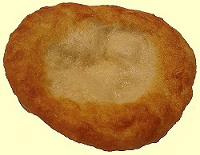
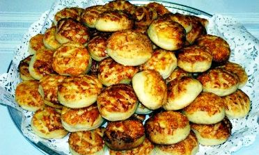
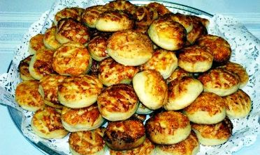
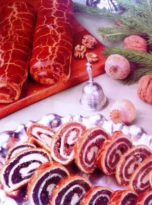

|
Kochrezepte
|
|
|
|
|
|
|
 |
|
|
|
|
|
|
|
|
|
|
|
|
|
| |
| |
|
|
|
|
|
|
|
|
|
|
| |
|
|
|
|
|
|
|
|
|
|
|
|
|
|
|
|
|
|
| |
| |
| Das
Wetter in Ungarn |
 |
| aktuelle
Temperaturen |
| |
|
|
|
|
|
|
Kuchen
- sütemény
|
|
|
|
Langosch / Lángos - ein Hefeteigkuchen
in Deutschland
bekannt als Knieküchle oder
Nürnberger Krapfen
|
| |
|
Im Schwabenland weitgehend verbreitet ist Knieküchle, aber wer
weiß schon in Deutschland, dass dieses im Fett gebackenes,
fladenförmiges Flammkuchengebäck,
das die
Ungarn den Touristen so herzlich gern als Nationalspeise zum Probieren
aufschwätzen, im fränkischen Bayern mindestens seit dem
Mittelalter Nürnberger Krapfen
heißt und in der Nähe von Nürnberg die Bewohner mehrerer Dörfer ihn als ihre eigene Landessspezialität betrachten?
|
 |
Der Nürnberger Krapfen wird im Nürnberger Land traditionell
von Frauen gebraten, aber ganz clever. Sie überlassen die
harte Arbeit den Männern, die den Teig sitzend übers Knie auf
der Lederhose zum Fladen kneten - soviel zur schwäbischen Bezeichnung als
Knieküchle. Knieküchle wird von Haus zu Haus unterschiedlich
zubereitet - gebacken oder frittiert - genauso wie Calzone,
die am Erfindungsort in Neapel und am Steintor in Hannover von
Neapolitanern frittiert wird, anderswo jedoch aus der
Backröhre kommt. Dass man den Nürnberger Krapfen auch ohne
Lederhose kneten kann, beweist der Siegeszug dieser
fränkischen Landesspezialität in Ungarn, wo Lángos ein reines
Frauenprodukt ist und dessen Produktion Sie an einem
ungarischen Jahrmarkt an den folgenden
Bildern sehen:
|
  |
|
Kirmesbäckerei
in Ungarn - Bilderquelle:
|
Der Nürnberger Krapfen hat seinen Weg zuerst nach
Berlin gebahnt
und dort entwickelte sich die gleiche, jedoch gezuckerte Rezeptur zum Berliner
Pfannkuchen, der anderswo schlicht nur Krapfen, Berliner- oder Weihnachtskrapfen genannt wird.
Der Berliner Pfannkuchen bzw. Berliner Krapfen wird in Ungarn schlicht nur Fánk
genannt, weil mit ungarischer Zunge Pfannkuchen kaum
auszusprechen ist.
Warum der Weihnachtskrapfen in Ungarn
von den Donauschwaben traditionell zu Ostern aufgetischt wird, dafür können wir nur
religiöse Gründe ausdenken.
Warum der
Krapfen
in
Ungarn Lángos (=flammig) heißt, das weiß
niemand, man kann nur vermuten, dass das mit dem heißen Fett
zu tun haben könnte, indem Lángos gebacken
wird, wie oben am mittleren Bild erkennbar. Knieküchle im Schwabenland und Nürnberger Krapfen aus dem
Frankenland kommen meistens aus dem Backofen, mancherorts
werden sie im Fett gebacken - ganz ähnlich, wie der Berliner
Krapfen - und werden anschließend mit
Puderzucker überstreut. Lángos in Ungarn wurde früher
ausschließlich mit einer Knoblauchtunke bestrichen und kräftig
gesalzen serviert - bis die DDR-Rucksacktouristen mit ihren
ungewöhnlichen Wünschen die Lángosbuden nach Berliner Vorbild reformierten.
|
Übrigens:
was die Ungarn nicht vorstellen können - ihre
vermeidlich ungarische
Nationalspezialität wird in kanadischen Imbissbuden im Winter von den Indianern als ihre
eigene Spezialität angeboten und ebenso von ihren seit Jahrtausenden
getrennt lebenden Verwandten in
Sibirien. - Da bleibt nicht viel Raum für Erklärungen
über den Ursprung dieser "ungarischen
Landesspezialität".
Anfang der 1960er Jahre galt Lángos als Armutszeugnis und war den meisten Ungarn unbekannt. Erst als die
zugelassenen privaten Lángosbuden um den Plattensee herum in
der sozialistischen Ära sich als Goldgruben erwiesen,
machte Lángos seinen Siegeszug. Zuerst berichteten die
Balaton-Urlauber von den Lángosbuden, dann fragten die
meisten, was ist Lángos überhaupt? Das Volk war arm
und der Lángos billig, so brachte die Masse der
Plattensee-Wochenendausflügler und die Westtouristen in den wenigen Sommermonaten das
Geschäft.
|
|
Es gibt drei Lángos-Varianten
aus folgenden Zutaten: |
-
Lángos pur - aus Weizenmehl -
500 g
Mehl Typ 405, 40 g Frischhefe, 200 ml Milch, 100 ml Wasser,
1 TL Salz, 1 TL Zucker, 50 ml
Sonnenblumenöl - und 1 Liter Sonnenblumenöl zum
Frittieren. Mit einer Knoblauchtunke bestrichen und kräftig
gesalzen - oder mit Puderzucker bestreut, wie Knieküchle im Schwabenland...
Die Zubereitung der Knoblauchtunke: Einige Knoblauchzehen fein hacken, in
einem Glas mit kochendem Wasser überschwemmen, über Nacht ziehen
lassen. Vor dem Verzehr den Lángos mit der Knoblauchtunke bestreichen und
kräftig salzen - möglichst mit Steinsalz.
-
Kartoffel-Lángos
- dazu mischt man Kartoffelmehl
in einem Verhältnis von 1 zu 3 zum Weizenmehl (100
g Kartoffelmehl zu 300 g Weizenmehl). Statt Kartoffelmehl
wird jedoch meistens ein Kartoffelbrei zubereitet.
Wie vor, auch diese Lángos-Variante
wird mit einer Knoblauchtunke bestrichen und kräftig
gesalzen..
-
Kraut-Lángos -
dazu mischt man sehr fein geraspelten,
kandierten
Weißkohl zum Weizenmehl
(100 g Weißkohl zu 300 g Weizenmehl).
Weißkohl zerreiben und in einer
Pfanne im heißen
Öl glasig werden lassen, mit wenig Salz und Zucker
abschmecken. Zum Mehl
mischen, wie oben beschrieben gehen lassen und backen.
Vor dem Verzehr mit Puderzucker bestreuen. Diese
Lángos-Variante ist besonders arbeitsintensiv,
lässt sich mit teuren Zutaten nicht belegen, ist billig und wird
daher an den Verkaufsständen selten angeboten....
|
An der Zubereitung der
drei Lángos-Varianten hat sich bis heute nichts geändert,
dafür aber das, womit man den Hefeteigfladen belegt, und das
ist eine gewaltige Entwicklung seit Anfang der 1960er Jahre,
die Lángos von heute auf den ersten Blick mit Pizza vergleichen lässt.
Als der Plattensee sich in den 1960er Jahren zum Ziel des
jugendlichen Massentourismus entwickelte, schossen die Lángos-Verkaufsstellen
aus dem Boden, wie Pilze nach jedem Regen, weil sie wie
Goldquelle für Ihre Betreiber waren. Die einfache Arbeit bei
der Herstellung aus billigen Zutaten ist eine ansehnliche
Schau, zugleich umständlich für die eigene Küche. - Ein
weiteres Armutszeugnis
lieferten die meist jungen DDR-Rucksacktouristen
(mit Konservendosen im Pack) etwa ab Anfang der 1960er Jahre am Balaton (Plattensee). Sie verfügten bekanntlich
über eine geringe, stark regulierte Menge an
Fremdwährung
für die Auslandsreise und nur das wenigste davon konnten sie
für die Ernährung in Ungarn
ausgeben, damit genug Geld für die in der DDR begehrten,
aber dort wegen Devisenmangel nicht erhältlichen Jeanshosen aus dem Westen
übrigblieb. Oft nahm man Opa und Oma im Zug bis Prag mit, sie fuhren
zurück, aber ihre Devisen brauchten die Jugendlichen in
Ungarn. Der Kleidermarkt von Siófok am Balaton war das Geheimziel,
dort
kannte man alle Wünsche der Ostdeutschen. Die Jeans mussten unbedingt von der Marke
Wrangler
oder Levy Strauss sein, das verlangte damals der Modetrend. Wer kenn diese Marken heute
noch?
Warmes Essen und billig war nur der
Lángos in den Buden am Plattensee und dort
staunten die Ungarn, wie die Ostdeutschen Marmelade auf den
Lángos schmierten - zum Entsetzen der Ungarn - und so wurde Lángos zu einem
ergiebigen, kalorienreichen und billigen Mahlzeit. Das war der Anfang vom Ende der ursprünglichen Lángos-Varianten
in Ungarn.
Seit eh
und je kräftig gesalzen und höchstens mit einer
Knoblauchtunke bestrichen, gibt es heute laufend neue
Ideen für den Belag. Vorbei sind die Zeiten mit billigem Marmelade,
immer öfter
wird Lángos mit Sauerrahm, Käse und
Schinken belegt, neuerdings machen Ketchup und verschiedene
Pizzasaucen sogar auf mexikanische Art das Rennen – die Phantasie
in
der Küche
ist ja
grenzenlos und die neuen Beläge stoßen auf offene
Ohren bei den
Betreibern der Lángos-Verkaufsstellen, weil sie
bei wenig Arbeit
viel
größere Einnahmen ermöglichen als Lángos nach Originalrezeptur.
|
Die Zubereitung von Kartoffel-Lángos von
einem Fachmann unter häuslichen Verhältnissen sehen Sie im
folgenden Video auf Englisch kommentiert und unten beschrieben:
|
|
|
|
|
Zutaten:
siehe oben unter den drei Langosch-Varianten die
Kartoffel-Mischung.
Zubereitung: Alle
Zutaten sollten Zimmertemperatur haben. Das Mehl in eine
Rührschüssel sieben, die Hefe in der lauwarmen Milch
auflösen. Alle Zutaten dazugeben und einen Teig kneten.
Unterschiedliche Mehlsorten binden unterschiedlich viel
Flüssigkeit. Nach Bedarf in kleinen Mengen etwas Mehl
dazu mischen, wenn der Teig zu weich und klebrig ist. Der Teig ist
fertig, wenn er sich vom Boden leicht löst, glatt, elastisch
und geschmeidig ist. Zudecken und an einen warmen Ort 30 Minuten ruhen
lassen. (Der Teig kann auch einige Stunden ruhen, sollte dann
zwischendurch mal durchgeknetet werden)
In
einer großen
Pfanne oder Topf soviel Öl auf rd. 180 °C (350° F) erhitzen. Die Hände mit
etwas Speiseöl benetzen, den Teig portionieren (ergibt etwa 8
große Langosch), wie eine kleine Pizza auf dem Nudelbrett
flachrollen und im heißen Fett beide Seiten auf goldgelb
frittieren - dann schmeckt er am besten. Im Fett versinkt zwar
der Teig zuerst, kommt aber bald auf die
Oberfläche. Dann ist der Langosch eigentlich schon fertig, sollte aber
goldgelb werden Auf Küchenpapier abtrocknen und unbedingt heiß servieren.
|
|
| Kiachä
/ ein Vergleich mit dem Lángos |
Die
wenigsten Deutschen haben je von Kiachä gehört. Er
ist eine Landesspezialität bei den Kuhbauern hoch
oben im Wendelsteingebiet:
der Kiachä ist mit
dem Lángos zum Verwechseln ähnlich. Im
Kiachäteig wird das Fett
durch Milch und Quark ersetzt. Kiachä
ist daher weniger fett als Lángos und wird als Brot, wie das
türkische Fladenbrot zur Gemüsesuppe gegessen. Kiachä
erinnert an die alte indogermanische Heimat im heutigen
Länderdreieck Indien, Pakistan und Afghanistan, wo
er heute genauso
bekannt
ist, wie bei den Kuhbauern im Wendelsteingebiet,
südlich von Rosenheim.
Sprachwissenschaftler
fanden heraus, dass Kiachä in Pakistan einen
dialektartig mit Kiachä vergleichbaren
Namen
hat. Der Ursprung von Kiachä wird daher in der alten
indogermanischen Heimat
vermutet.
Zubereitung: Weizen-
und Roggenmehl, Salz, Hefe, Milch und Quark werden zu Teigkugeln
geknetet, anschließend zu handtellergroßen Fladen
ausgerollt und wie Lángos oder Krapfen in
heißem Fett
einzeln
gebraten. |
|
|
|
|
|
|
Töpörtyűs Pogácsa
/ Grammelnpogatscha |
| |
 |
Pogatscha ist ein
Hefeteigkuchen und gilt als Leckerbissen zwischendurch - steht in
den meisten Lokalen griffbereit wie Chips bei uns,
gelegentlich auch zuhause und dient als Basis für ein Getränk,
ferner für einen dicken Bauch, wenn man den eigenen Maß
nicht beachtet.
Je
nach dem, was man in den Teig rührt, können
diese Backofenprodukte unterschiedlich schmecken. Die gängigen Zutaten sind Grammeln, Quark
und Kartoffel. (Grammeln sind ausgelassene Speckwürfel).
Während die Grammelnpogatschas am linken Bild
schichtweise wie Blätterteig geknetet wurden, sind die
anderen auf dem Bild unten Kartoffelpogatschas, die man
einfach knetet, weil sie nicht so hoch aufgehen. |
| |
   |
| |
Grammelnpogatscha - das Rezept:
Zutaten: 450
g Mehl, 1 Hefewürfel, 0,1 l Milch (zum Auflösen der Hefe), 350 g fein gehackte
Grammeln, 1 Ei, 1 Eidotter, 3 EL Sauerrahm, 0,05 l süßer
Weißwein, Salz, Pfeffer und Ei zum bestreichen.
Zubereitung:
Die Hefe in lauwarmer Milch mit wenig Mehl und Salz auflösen
und kurz zu einem Vorteig bzw. Dampfl gehen lassen.
Die Grammeln fein hacken und mit dem Mehl auf einer
Arbeitsfläche ab bröseln. Ei, Dotter, Sauerrahm, Wein und
Gewürze dazugeben und gemeinsam mit dem aufgegangenen Vorteig
zu einem Teig verkneten.
Den Teig dünn
ausrollen und wieder zusammenschlagen. Diesen Vorgang 2-3 mal
wiederholen und dann an einem warmen Ort ca. 30 Minuten gehen
lassen. Den Teig auf eine Dicke von ca. 2,5 cm ausrollen und
mit einer runden Form kleine Krapfen ausstechen.
Die Krapfen auf ein gut gefettetes Blech legen, die
Oberseite der Pogatschen mit einem scharfen Messer
gitterförmig einritzen und ca. 30 Minuten lang mit einem
Küchentuch bedeckt ruhen lassen.
Mit Ei
bestreichen und bei 180 Grad ca. 15 Minuten goldgelb backen. |
| |
| |
|
Kümmelstange, Käsestange |
|
Kömémymagos és Sajtos rúd |
| |
ein Leckerbissen zwischendurch
|
 |
| |
Rezept: demnächst hier
Zutaten: demnächst
hier
Zubereitung: demnächst
hier
|
| |
| |
| Szilvásgombóc /
Zwetschgenknödel |
| |
Zu den beliebtesten Nachspeisen, die auf den Festtagstisch
gehören, zählen die mit Zwetschgen, evtl. mit Aprikosen oder
Kirschen gefüllten Mehlteigklöße.
Rezept und
Zubereitung nach dem Video. |
|
| |
Zutaten für den Teig: 1 kg Kartoffeln, 350 g Weizenmehl,
2 Eier, 100 g Butter oder Speiseöl.
Zutaten für die Füllung: ca. 20 Stück
Zwetschgen oder Pflaumen,
Zimt und Puderzucker.
Zutaten
für den Bröselbelag: 200 g Semmelbröseln, 100 g
Butter.
|
Die Zubereitung von Szilvásgombóc
im Video - mit
englischer Beschriftung, darunter beschreiben wir unsere
Methode mit den genannten Zutaten auf Deutsch:
|
|
| |
Zubereitung von Szilvágombóc: Kartoffeln
schälen, kochen, zerreiben, mit den Zutaten für den Teig
verrühren und kneten, anschließend ca. 1 Stunde lang im
Kühlschrank ruhen lassen.
Während der
Teig-Ruhezeit die Zwetschgen entkernen, in einer
Puderzucker-Zimt Mischung in einer Pfanne verrühren und
mindestens eine halbe Stunde lang zusammenreifen lassen.
Den Teig evtl. mit Zugabe von zusätzlichem Mehl erneut
kneten und auf einem Nudelbrett möglichst quadratisch
ausrollen. 6-8 cm breite quadratische Teigstücke schneiden
und diese mit je einer Pflaume belegen. Die Teigstücke zu
geschlossenen Klößen formen.
In einer
Pfanne 100 g Butter bei schwacher Hitze erwärmen und darin
ca. 300 g Semmelbröseln bei ständigem Rühren leicht anrösten
- nicht anbrennen!
Die Klöße in kochendem
Salzwasser ca. 5 Minuten lang kochen und abtropfen lassen.
Mit den gerösteten Semmelbröseln belegen. Beim Servieren auf
dem Teller mit Puderzucker bestreuen. |
|
| Apfelkuchen
/ Almás lepény |
Zutaten: 300
g Mehl, 120 g Butter, 50 g Zucker, 1 Ei, Eigelb von 2-3 Eiern, 1 EL
Schmand,
1 Prise Salz, 1 kg geschälte Äpfel in Scheiben
geschnitten, Zimt, 1 Handvoll
Brösel.
Teig: Mehl,
Butter, Zucker, Ei, Schmand und Salz zum Teig kneten. Zweigeteilt die
eine
Hälfte auf dem Backblech ausbreiten.
Füllung: Apfel
mit Zimt und Zucker kochen, bis die Flüssigkeit restlos
verdampft,
abkühlen lassen. Den Teig auf dem Backblech mit
Bröseln bestreuen, die
Apfelscheiben darauf verteilen. Die Bröseln sollten die
Feuchtigkeit der Äpfel
aufsaugen.
Zubereitung: Die
zweite Hälfte vom Teig darüber verteilen und mit
einer Gabel überall
einstechen, damit die noch verbliebene Flüssigkeit aus dem
Teig dampfen kann.
Mit dem Eigelb bestreichen und gleichmäßig
rosafarbig backen. Mit einem sehr
scharfen Messer verteilen.
Übrigens:
die Rezeptur und das Ergebnis sind weitgehend identisch mit dem
berühmten Apple Pie, von dem wir die nordamerikanische
Variante empfehlen. |
|
|
|
| |
| Weichselkuchen
/ Meggyes lepény |
Zutaten: 150
g Butter, 200 g Mehl, 200 g Zucker, 4
Eier, Saft und geriebene Schale einer halben Zitrone, 1/2 Packung
Backpulver, Vanillezucker,
1 Prise Salz.
Teig: Butter
und Zucker geschmeidig rühren, 4 Eier dazugeben, zuerst das
Mehl, dann
die restlichen Zutaten dazugeben und geschmeidig rühren.
30X40cm
großes und 5 cm hohes Backblech buttern, mit Mehl
bestreuen und den
Teig mit einem Holzlöffel darin verteilen.
Füllung: je
nach Jahreszeit entkernte Weichselkirschen, Pflaumen oder Aprikosen
gleichmäßig auf dem Teig verteilen.
Im
Backofen gleichmäßig rosa backen. Das Obst
versinkt etwa zur Hälfte im
Teig während des Backvorganges. Noch warm sollte man in
Schnitte teilen.
|
|
| |
| Sauerkirschstrudel
/ Meggyes rétes |
| Dieser
Festtagskuchen aus der bäuerlichen Küche
trägt
in seinem Namen das Wort
„Schicht” (réteg), besteht er doch aus
mehrfach gefalteten Teigschichten.
Strudelteig wird aus Strudelmehl (Typ 550 im Supermarkt) mit Fett,
Eiern, Salz und
Wasser
geknetet und dann mit den Händen hauchdünn
ausgezogen. Als Füllung sind vor
allem Quark und Mohn, aber auch Kraut, Walnuss und Obst beliebt. - Der
länglich
aufgerollte Strudel wurde um die vorige Jahrhundertwende in Spiralform
auf einem runden
Blech im Bauernofen gebacken. Vorher wurde er reichlich mit saurer
Sahne
begossen, damit er weich und blättrig wurde, aber nicht
austrocknete. Diese Spezialität
gehörte vor allem in Transdanubien und in der Tiefebene zum
Festmenü. Besondere
Anlässe zum Strudelessen
waren Neujahr, eine Hochzeit oder die Geburt eines Kindes. |

|
Zutaten für 2 Stangen: 1
fertig gekaufter sechsblättriger Strudelteig, 1000g
Sauerkirschen, 100-150g
zerbröckelte Biskuitsbrösel ( oder
zerbröckelte Biskuit, eventuell ungefülltes
Dauerteegebäck oder süßes Zwieback ), 3EL
Öl, 2-3EL Mehl, 1TL gemahlener
Zimt, 1Espresso Löffel gestoßene
Gewürznelke, Zucker nach Geschmack, 1 Ei
darauf
Vorbereitung: Zur
Füllung die Sauerkirschen waschen, entstielen und entkernen,
dann mit dem
Saft zusammen in eine Kasserolle geben. Bei kleiner Hitze, unter
ständigem Rühren
nur solange erhitzen, dass er wenig Saft gibt. Dann von der Kochstelle
nehmen,
und die Gewürze und den Zucker dazugeben. Nur soviel
Biskuitbrösel
hineingeben, die den Saft ansaugen kann. Auskühlen lassen.
Zubereitung: Die
getrennten Strudelblätter mit Öl beschmieren, dann
drei aufeinanderlegen.
Auf dem Rand des Teigblattes die Hälfte der Füllung
in einem Streifen geben.
Fest aufrollen, und die Stange auf das Backblech legen. Oben darauf mit
Öl
vermischten geschlagenem Ei beschmieren. Die andere Stange auf diese
Weise
anfertigen, und in den vorgeheizten, heißen Backofen
schieben. Bei mittlerer
Hitze backen.
Tipp: Den
gebackenen Strudel nur dann anschneiden, wenn er schon
abgekühlt ist.
Statt frischer Sauerkirsche kann auch tiefgefrorene Sauerkirsche oder
abgetropftes entkerntes Sauerkirschkompott genommen werden. Es schmeckt
noch
besser, wenn die Hälfte der Biskuitsbrösel mit
gemahlener Nuss ersetzt wird. |
|
|
|
|
|
| Vargabéles
mit Obst
/ Vargabéles |
Zutaten für 8 Personen:
500g
halbfetter Quark, 200g Fadennudeln, 250g gemischtes, irgendeines
zerstückeltes
Obst (Kompott is ebenso geeignet), 400ml saure Sahne, 4 Eier, 100-100g
Rosinen,
Margarine und Puderzucker, 2 Pck. (vier oder sechsblättriger)
Strudelteig,
2TL Vanillenzucker, Zitronenschale, 1TL Salz.
Vorbereitung: Die
eine Packung des Strudelblattes trennen, und ein mittelgrosses,
tieferes
Backblech damit so auslegen, dass es auch einen Rand bekommt. Zwischen
den
Strudelblättern mit zergangener Margarine begiessen. Die klein
gestückelten
Fadennudeln in salzigem Wasser kochen, dann warm halten. Den
durchpassierten
Quark mit dem Eigelb, der 50g zergangener Margarine, Puderzucker,
Vanillinzucker,
Zitronenschale und saure Sahne glatt rühren. Das Eiweiss steif
schlagen. Das
Obst klein schneiden und abtropfen.
Zubereitung: Die
gekochten Nudeln mit der Eier-Quarkcreme, Obst und Eiweiß
mischen. Das
ganze auf das mit dem Strudelblatt ausgelegte Backblech geben,
glattmachen, und
mit der zweiten Packung Strudelblatt bedecken, zwischen den
Blättern wieder mit
zergangener Margarine begießen. Im vorgeheizten,
heißen Backofen rot-braun
backen, und würfeln, mit wenig Puderzucker bestreuen und so
anbieten.
Am
besten schmeckt der Vargabéles mit Aprikose,
Sauerkirsche, Zwetschge oder
Pfirsich. |
|
|
|
|
| Beigli / Beugel
bzw. Wiener Stollen |
| |
|
|
 |
Eine
echte Kalorienbombe, die von den Donauschwaben traditionell zu Ostern und
Weihnachten aufgetischt wird und immer mehr auch bei den
Ungarn auf den Weihnachtstisch gehört. Das
Wort Beigli stammt aus dem in Wien bekannten Weihnachtsstollen, der dort unter
verschiedenen Namen, so
auch als Beugel bezeichnet wird und davon als Beigli ins Ungarische transferiert wurde.
In Wien wird Beugel von den Zugereisten Wiener
Stolle bezeichnet und dort oft mit einer Schokoladenlasur
überzogen.
Während die österreichische Weihnachtsstolle
unterschiedlich gefüllt werden kann in Anlehnung an die
Nürnberger und Dresdner Stollen bzw. Striezel, in Ungarn
kommen grundsätzlich Mohn
oder Walnuss, gelegentlich auch Kakao in Frage. Diese Füllung kann in Ungarn mit
Rosinen und Aprikosenmarmelade bereichert werden,
neulich machen Marzipanflocken die Runde. In Ungarn ist die Oberflächenbeschichtung immer eine Eierglasur.
Übrigens:
Der Wiener Beugel hat mit Beigel oder Bagel (gelochter
Berliner bzw. doughnut) nichts zu tun, trotz andersartiger Behauptungen
der deutschsprachigen
Ausgabe von Wissenspantscher Wikipedia. |
Zutaten für 4 bis 6
Stollen: 600 g
Strudelmehl, 250 g Butter oder Margarin (es reicht auch die
Hälfte, dann wird
der Teig luftig-locker-leichter nach dem Backvorgang), 150 g Zucker, 2
Eier,
1 Hefewürfel, 0,2 l Sauerrahm oder Schmand, 1/2 TL Salz.
Zutaten für die Mohnfüllung: 400
g weichgemahlener Mohn (in Geschäften bekommt man nur geknackte Mohnkörner,
daher selbst mahlen! - über Mohn und Opiate lesen Sie
), 200 g Zucker, soviel Wasser, dass die Mischung
streichfähig ist. Wenn man die Füllmasse mit
Aprikosenmarmelade anreichert,
sollte man weniger Zucker verwenden.
Zutaten für die Walnussfüllung: 400
g gemahlene Walnuss, 200 g Zucker, soviel Wasser, dass die Mischung
streichfähig ist, 1 handvoll Rosinen, 2-3 Stamperl Rum oder
1-2 Ampullen Rumaroma.
Zutaten für die Glasur:
Das
Eigelb von 2 Eiern. |
 |
Die Zubreitung von Beigli demonstriert das folgende
Video:
|
|
|
|
|
Zubereitung: Die
Zutaten für den Teig mit soviel Sauerrahm
verkneten, dass
der Strudelteig hart wird. In 4 bis 6 Stücke teilen, an einer
lauwarmen Stelle
eine Stunde lang zugedeckt aufgehen lassen. Auf dem Knetbrett
backblechlange
rechteckige Stücke
ausbreiten, füllen und aufrollen
und auf das Backblech
nebeneinander anordnen. Zwischen den Stollen sollte ein Zwischenraum
bleiben,
weil sie im Backofen aufgehen. In dem auf 180°C
vorgewärmten Backofen max. 40
Minuten lang, im nicht vorgewärmten Elektroofen ca. 50 Minuten
lang backen.
|
|
|
Dobos
Torte / Dobostorta
Die bekannteste ungarische Torte - vergleichbar mit der Sacher Torte |
Zutaten
für den Teig: 125 g
Kristallzucker, 150 g Mehl, 6 Eier.
Zutaten für die
Füllung: 350 g Butter, 300 g
Puderzucker, 70 g Kakaopulver, 3 Eigelb.
Zutaten für die Glasur: 200
g Zucker.
Zubereitung: 6
Eier, 125 g Kristallzucker, 150 g Mehl zu einer Biskuitmasse kneten und
auf
dem gebutterten Backblech einer Springform ausbreiten. Insgesamt 6
Biskuitscheiben
sollen daraus werden.
|
 |
Kakaocreme-Füllung: Den
Puderzucker mit
Eigelb, Kakaopulver und Butter schaumig rühren.
5
Biskuitscheiben mit der Kakaokreme bestreichen und im
Kühlschrank einfrieren.
1
Biskuitscheibe mit der noch heißen, karamellisierten
Glasurmasse übergießen und
vor dem Erstarren mit einem gefetteten Messer in
portionsgroße Tortenstücke
spalten. Nach dem Auskühlen Stück für
Stück einzeln auf die kalte Torte legen.
Die Torte wird beim Serviervorgang den karamellisierten Biskuitscheiben
entsprechend, mit einem nassen Messer aufgeschnitten. |
|
| |
| |
|
Ungarn-Tourist Team

|
| |
| |
|


{kind=link}